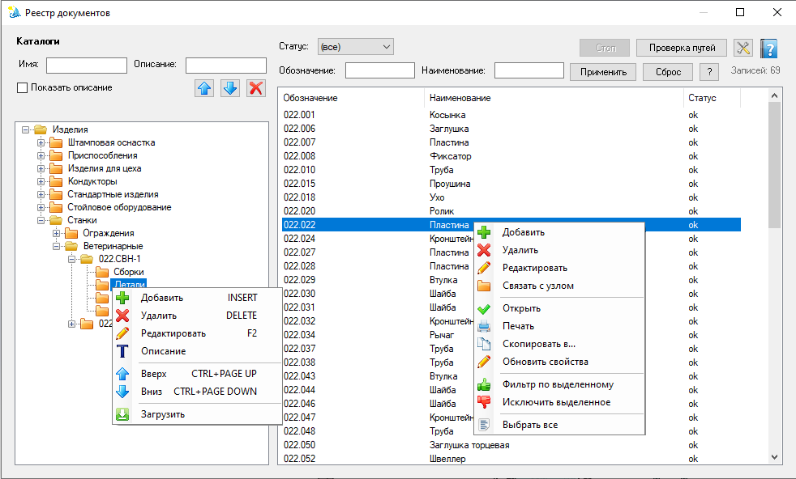

Реестр документов
Каталог учёта файлов КБ: виртуальные папки для смысловой раскладки и список записей с обозначением, наименованием и статусом пути. Это не состав изделия — для состава открытой сборки используйте реестр изделия.
Как открыть
Лента Velum → Реестр документов. Доступно всем; при уровне user форма в основном только для просмотра (без CRUD).
Роль и ключ учёта
- Назначение — быстрый поиск документов, проверка путей, зеркала свойств экспорта (DXF/PDF), раскладка по виртуальным каталогам.
- Ключ записи — нормализованный абсолютный путь к файлу. Один файл на диске → одна запись в реестре. Имя файла может повторяться (например копии DXF в разных папках изделий).
- Ключ уникальности обозначения — обозначение + расширение файла связанного документа (регистр расширения не учитывается). Две разные детали с одним обозначением и одним расширением в реестре невозможны: при добавлении и при изменении обозначения/файла карточка не сохранится с конфликтом. Пустое обозначение в проверке не участвует. Записи, ставшие дублями до введения правила, сохраняются и отображаются в проблемах реестра как «Дублирование обозначения» (метрика
Velum.Registry.HasDuplicateDesignations). - Виртуальные папки — удобная группировка в дереве; они не обязаны совпадать с папками на диске и не заменяют состав сборки.
Области окна
- Каталоги — дерево виртуальных папок; поиск по имени и описанию; «Показать описание»; кнопка автоимён каталогов.
- Список документов — обозначение, наименование, статус пути.
- Фильтры — Статус / Обозначение / Наименование; Применить / Сброс / ?.
- Проверка путей — массовая проверка ссылок на файлы на диске.
- Стоп — прерывает индексацию «Загрузить», длительное «Обновить свойства» и добавление записей в реестр.
- Индикатор прогресса (под деревом) — индексация «Загрузить» и обновление свойств, когда нет активной сборки.

Реестр документов: слева дерево каталогов, справа фильтры и список записей (обозначение, наименование, статус пути). В шапке списка — Стоп, Проверка путей и кнопка автоимён каталогов.
Отчёт
Кнопка Отчёт формирует HTML-отчёт по текущему списку и сохраняет его в Reports подкаталог хранилища реестра (открыть последние отчёты — кнопка Список отчётов рядом). В отчёт попадают записи выделенного каталога дерева с учётом фильтров списка (Статус, Обозначение, Наименование) и фильтров дерева (Имя и Описание каталога).
Обычный режим
Без активного фильтра дерева отчёт выводит полную иерархию каталогов — как в дереве формы. Записи группируются по своим каталогам, все уровни раскладки видны (например Изделия\Замок\001.010.010.002.Ш001.00 СБ\Сборки).
Сокращённая ведомость (фильтр дерева активен)
Если в полях поиска по дереву (Имя / Описание) задан хотя бы один фильтр, отчёт переключается в сокращённый режим:
- В отчёт попадают только те записи, каталог которых удовлетворяет фильтру дерева (сравнение — подстрока без учёта регистра; учитывается и всё поддерево совпавшего каталога).
- У путей группировки отбрасываются два последних уровня: узлы-категории (Сборки / Чертежи / PDF / Детали / DXF) и папка-обозначение узла. Записи из этих каталогов «схлопываются» в вышестоящий узел.
Например, при фильтре дерева по СБ записи из каталогов
Изделия\Замок\001.010.010.002.Ш001.00 СБ\Сборки Изделия\Замок\001.010.010.002.Ш001.00 СБ\Чертежи Изделия\Замок\001.010.010.002.Ш001.00 СБ\PDF
в отчёте попадут в общий блок:
Замок (3) 001.010.010.002.К001.00 СБ | | …СБ.SLDASM | OK 001.010.010.002.К001.00 СБ | | …СБ.SLDDRW | OK 001.010.010.002.К001.00 СБ | | …СБ.pdf | OK
Комбинируя фильтр дерева и фильтр списка по Обозначению (например маска СБ), можно получить сокращённую ведомость головных сборок — сводку вида «сколько всего головных сборок и как они разложены», без раскладки по узлам, деталям, чертежам и PDF.
Статусы пути
| Статус | Значение |
|---|---|
ok | Файл найден по указанному пути. |
NO | Файл отсутствует или ссылка битая. |
? | Статус не определён / требуется проверка («Проверка путей»). |
Меню
Дерево (admin): Добавить, Удалить, Редактировать, Описание; Вверх / Вниз (порядок узла в группе); Загрузить.
Список: Открыть, Печать, Скопировать в…, Обновить свойства, Выбрать все; у администратора дополнительно — Добавить, Удалить, Редактировать, Связать с узлом.
Меню дерева разбито горизонтальными разделителями на смысловые группы: операции с каталогом (Добавить / Удалить / Редактировать / Описание), порядок узла в группе (Вверх / Вниз) и индексация (Загрузить).
Вверх и Вниз — переставляют выделенный узел внутри его дочерней группы (соседей с тем же родителем), меняя сортировку каталогов в дереве. Команды доступны только пунктами контекстного меню, без сочетаний клавиш. На первом узле группы «Вверх» и на последнем «Вниз» сдвиг не выполняется — за границы группы узел не переносится.
user пункты изменения скрыты или недоступны; можно просматривать, открывать документы и обновлять свойства выделенных записей.
Ожидание чертежа задаётся свойством документа «Нужен чертеж» (Yes/No) в SOLIDWORKS — при Save детали/сборки создаётся как Yes, если отсутствует; снять можно вручную в свойствах файла или пунктом Не нужен чертеж в пакетном PDF. В меню этого окна флаг не меняется; в реестре хранится только зеркало (sync через «Обновить свойства» / Save / пакетный PDF).
Загрузить (индексация)
Контекстное меню дерева → Загрузить (только admin): выбирается каталог на диске, файлы индексируются в выделенный узел дерева (или в типовые субкаталоги по автоименам).
- Индексируются только файлы, расширения которых заданы в настройках Автоимена каталогов (
folderAutoNames.json). Для каждого расширения определён каталог-категория (Чертежи, Детали, DXF, PDF, Сборки, Картинки, Тексты, Видео и т.д.). - Файлы, расширение которых не представлено в настройках автоимён каталогов, игнорируются — каталог «Прочее» больше не создаётся.
- Файл с тем же полным путём, что уже есть в реестре, пропускается — повторная загрузка не создаёт дубликат.
- Файлы с одинаковым именем, но разными путями добавляются как отдельные записи, только если не занимают занятый ключ уникальности обозначения (обозначение + расширение).
- Файл, обозначение которого (по умолчанию — имя файла без расширения) с тем же расширением уже занято другой записью, пропускается с причиной — в итоге индексации это строка «Пропущено (дубль обозначения + расширения)» и перечень пропущенных файлов. Индексация при этом продолжается.
- Фильтра по открытой сборке нет: состав изделия смотрите в реестре изделия.
- Автоматическая синхронизация свойств при индексации не выполняется — после загрузки используйте Обновить свойства: наименование деталей/сборок из SOLIDWORKS, зеркало экспорта и копирование наименования в одноименные чертежи, DXF и PDF.
Контекстное меню списка содержит Фильтр по выделенному / Исключить выделенное по столбцам Обозначение и Наименование (см. маски фильтров).
Печать
Контекстное меню списка → Печать для выделенных записей:
- допустимы только файлы
.slddrwи.pdf; - если часть выделения не подходит, показывается список пропущенных записей;
- для валидных записей открывается та же форма очереди печати, что и в реестре изделия.
Чертежи SolidWorks печатаются через SolidWorks на выбранный принтер; PDF — через системное приложение просмотра (при необходимости используется принтер по умолчанию Windows).
Скопировать в…
Контекстное меню списка → Скопировать в… для выделенных записей:
- копировать можно только файлы
.dxf; - если часть выделения не DXF, показывается список пропущенных записей;
- после выбора каталога файлы копируются в указанное место (существующие перезаписываются).
Обновить свойства
Контекстное меню списка → Обновить свойства. Команда обрабатывает выделенные записи .sldprt, .sldasm, .slddrw, .dxf и .pdf (остальные типы пропускаются с сообщением).
Порядок выполнения:
- Наименование деталей и сборок — поле «Наименование» в реестре берётся из свойства документа SOLIDWORKS «Наименование». Если среди выделения есть чертежи, DXF или PDF, сначала обновляются и одноименные детали/сборки в реестре (даже если они не выделены).
- Зеркало экспорта — для уже открытых
.sldprt/.sldasm/.slddrw(и для деталей/сборок, которые пришлось открыть) синхронизируются свойства документации: «Нужен чертеж», «Нужен dxf», «Путь dxf», «путь чертежа», «Нужен pdf», «Путь pdf», штампы, per-config метаданные DXF. Закрытые чертежи для этого не открываются. - Копирование наименования — значение поля «Наименование» с детали/сборки копируется в одноименные записи чертежей, DXF и PDF. Чертежи, DXF и PDF сами по себе не открываются.
Свойства SOLIDWORKS читаются одним проходом по уже открытым документам и загруженным компонентам открытых сборок. OpenDoc — только для деталей и сборок, которых нет в сессии. Чертежи не открываются: их «Наименование» в реестре берётся копированием с одноименной детали/сборки.
Одноименность — совпадение обозначения (если оно пусто — имя файла без расширения, без учёта регистра). Для DXF сравнивается только первая часть имени до разделителя «:» (также «∶» U+2236 и полноширинное «：»). Пример: DXF ABC-001∶ Front соответствует детали или сборке ABC-001.
Куда копируется наименование:
- в выделенные чертежи, DXF и PDF;
- во все такие записи реестра, одноименные выделенным деталям и сборкам.
Пустое наименование источника цель не затирает. Если одноименной детали/сборки нет или у неё пустое имя, запись DXF/PDF/чертежа пропускается (это отражается в итоговом сообщении).
Во время операции доступна кнопка Стоп. Индикатор прогресса показывается только если часть файлов пришлось открывать (OpenDoc).
При синхронизации конфигураций детали блок per-config метаданных в реестре полностью заменяется актуальным списком из SOLIDWORKS: свойства удалённых конфигураций из зеркала убираются, чтобы запись не разрасталась.
Связь с экспортом
По записям реестра фоновый контроль может накапливать проблемы флота DXF/PDF (нужен экспорт, устарел, мусорный и т.д.) — см. Проблемы реестра. Метаданные экспорта («Нужен чертеж», «Нужен dxf», «Путь dxf», «Путь pdf» и др.) синхронизируются со свойствами документов командой «Обновить свойства», при Save открытого документа или после действий пакетного PDF/DXF.
Данные
Хранилище по умолчанию: %ProgramData%\VELUM\ProductRegistry (JSON). Путь задаётся в настройках проекта.
Связанные окна
- Карточка документа — редактирование записи.
- Связать с узлом — выбор виртуального каталога для выделенных.
- Описание каталога / Автоимена каталогов — администрирование дерева.
- Проблемы реестра — сводка нарушений, включая флот DXF/PDF.
- Реестр изделия — состав активной сборки.
См. также
- Настройки проекта (путь к БД реестра)
- Фильтры списков
- Реестр изделия